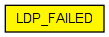

Failed router. Discards all incoming traffic and generates nothing. Its interface (gates, parameters) is fully compatible with the LDP_LSR router and node failures may thus be simulated by replacing the RSVP_LSR with LDP_FAILED.
The following diagram shows usage relationships between types. Unresolved types are missing from the diagram. Click here to see the full picture.
The following diagram shows inheritance relationships for this type. Unresolved types are missing from the diagram. Click here to see the full picture.
| Name | Type | Default value | Description |
|---|---|---|---|
| holdTime | double | 15s | |
| helloInterval | double | 5s | |
| namid | int | -1 | |
| peers | string | ||
| routerId | string | "auto" | |
| routingFile | string | "" |
| Name | Value | Description |
|---|---|---|
| labels | node | |
| display | i=abstract/router;i2=status/noentry |
| Name | Direction | Size | Description |
|---|---|---|---|
| pppg [ ] | inout |
// // Failed router. Discards all incoming traffic and generates nothing. Its // interface (gates, parameters) is fully compatible with the LDP_LSR router // and node failures may thus be simulated by replacing the RSVP_LSR // with \LDP_FAILED. // module LDP_FAILED { parameters: @labels(node); @display("i=abstract/router;i2=status/noentry"); double holdTime @unit("s") = default(15s); double helloInterval @unit("s") = default(5s); int namid = default(-1); string peers; string routerId = default("auto"); string routingFile = default(""); gates: inout pppg[] @labels(PPPFrame-conn); submodules: dummy: Dummy { gates: in[sizeof(pppg)]; out[sizeof(pppg)]; } connections allowunconnected: for i=0..sizeof(pppg)-1 { pppg$i[i] --> dummy.in[i]; dummy.out[i] --> pppg$o[i]; } }